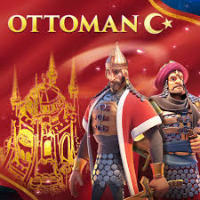
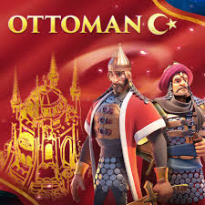

I'm an avid gamer and enjoy playing a variety of titles on both my computer and phone. My
favorite
PC games include Grand Theft Auto V, Forza Horizon, and Wolfenstein, while on mobile I prefer
strategy games like Clash Royale and Rise of Kingdoms.
Beyond just being fun, I find that many of these games offer interesting life lessons. Playing
GTA
V, for instance, has taught me a surprising amount about the importance of responsible money
management and investing. Similarly, a game like Rise of Kingdoms is a great exercise in
strategic
thinking, showing how crucial it is to form alliances and protect yourself when you're
vulnerable.


 
